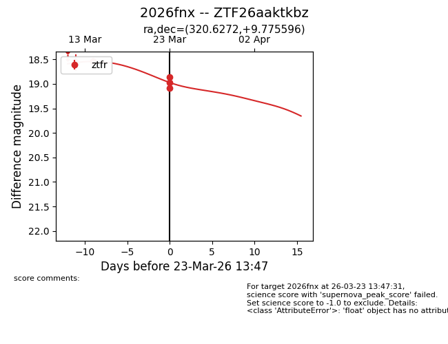
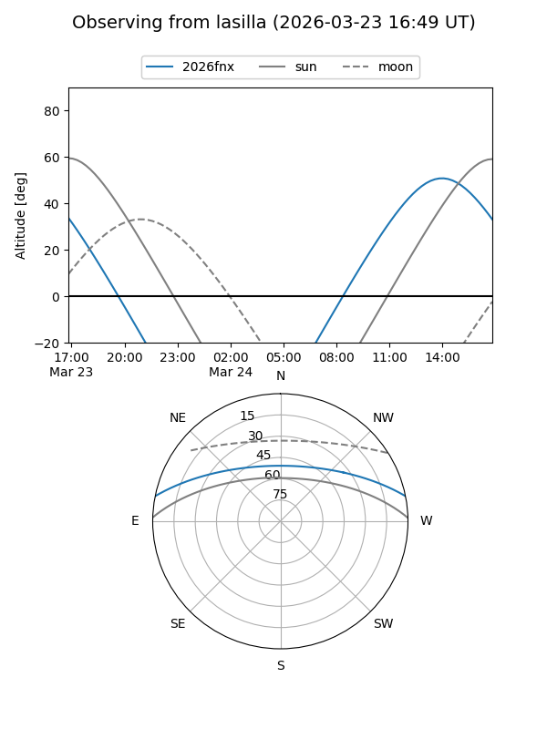
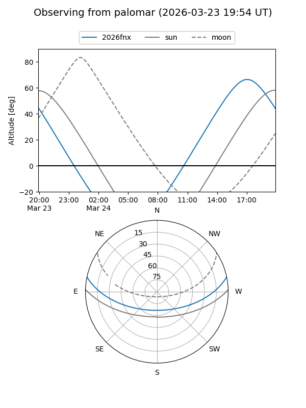
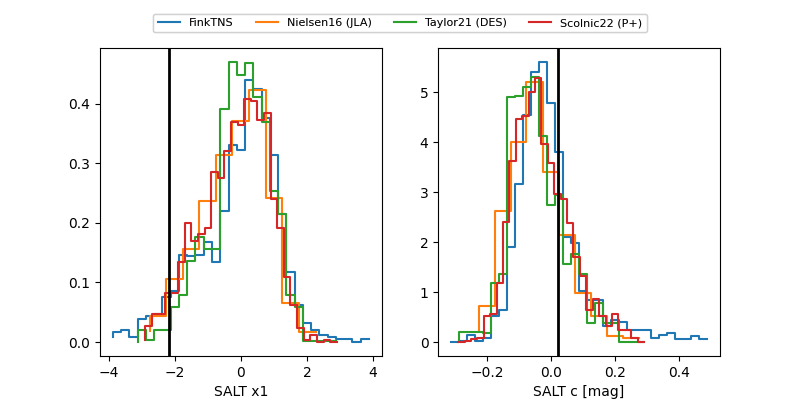

2026fnx
Target 2026fnx at 2026-03-23 13:50
Aliases and brokers:
FINK: link
Lasair: link
ALeRCE: link
TNS: link
YSE: link
alt names
ZTF26aaktkbz (ztf,fink_ztf)
2026fnx (tns,yse)
Coordinates:
equatorial (ra, dec) = 320.6272,+9.77560
equatorial (HMS+DMS) = 21:22:30.54,+09:46:32.15
galactic (l, b) = (61.6221,-27.37088)
Flags:
Photometry:
last ztfr=19.08
5 ztfr detections
Lightcurve

Visibility


Additional plots
